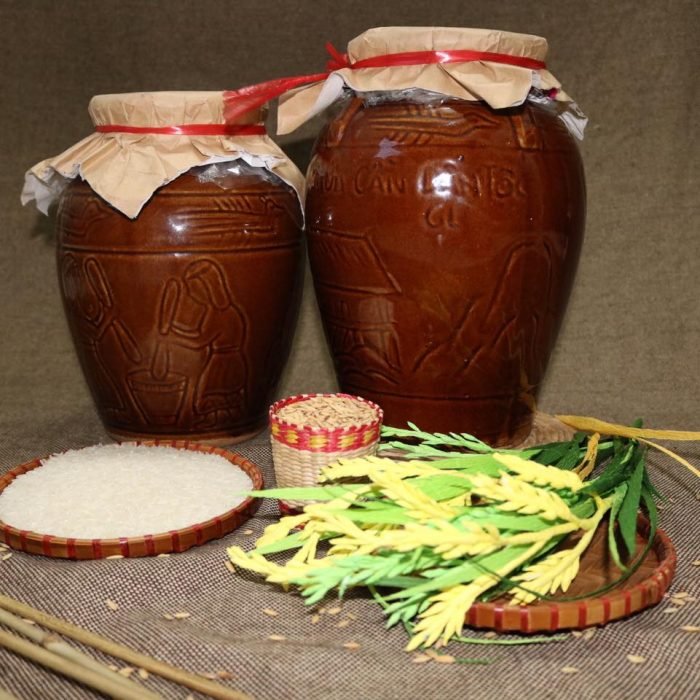
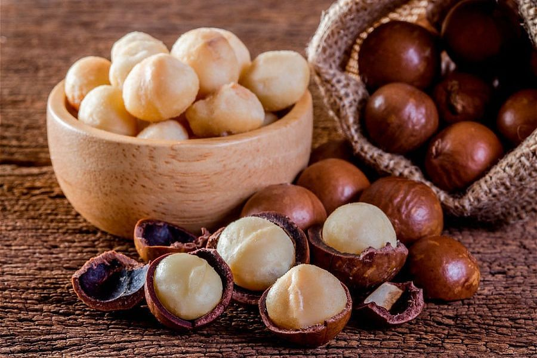
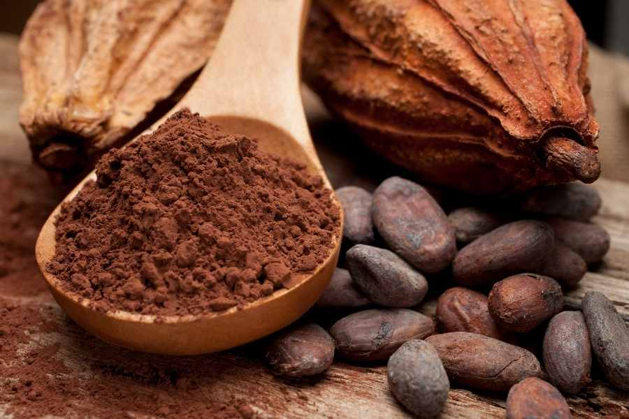
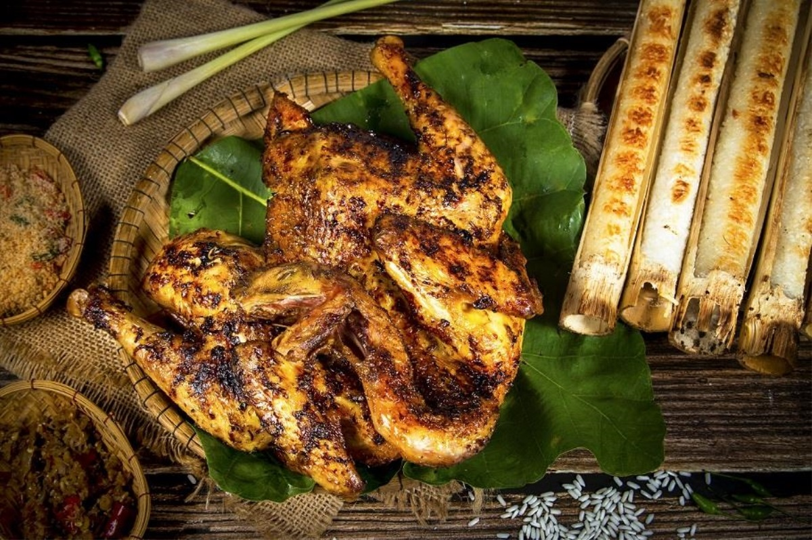
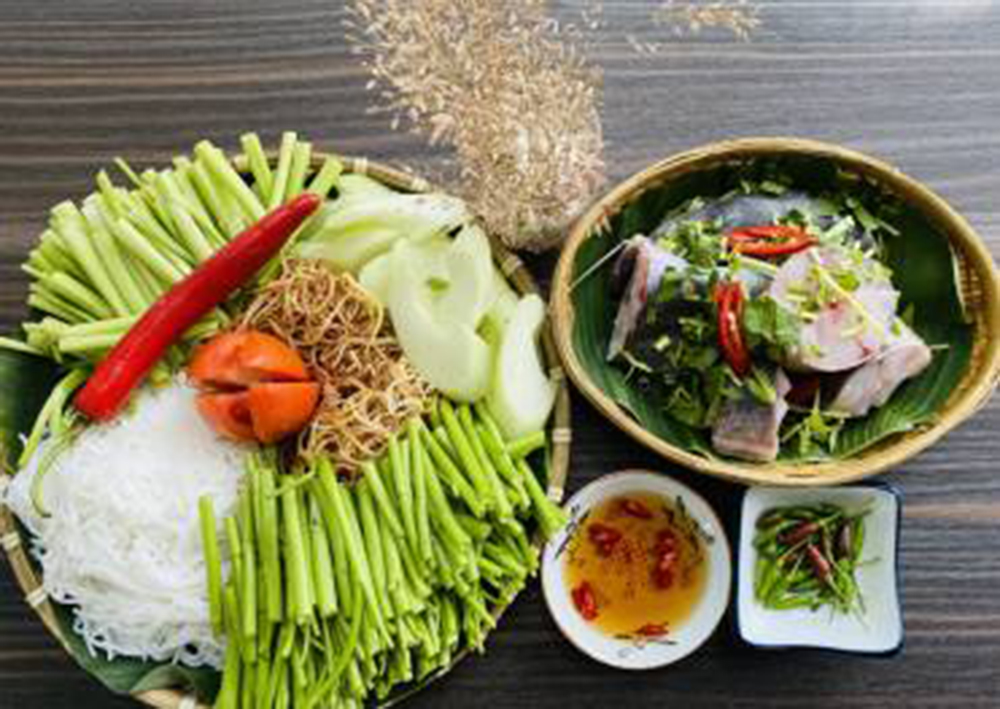
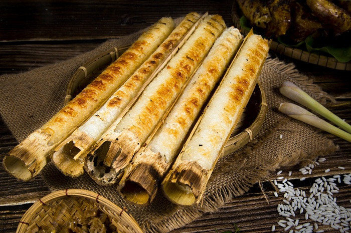
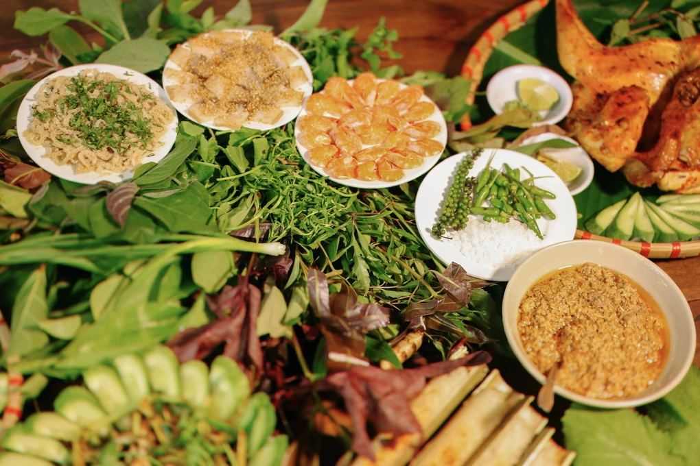
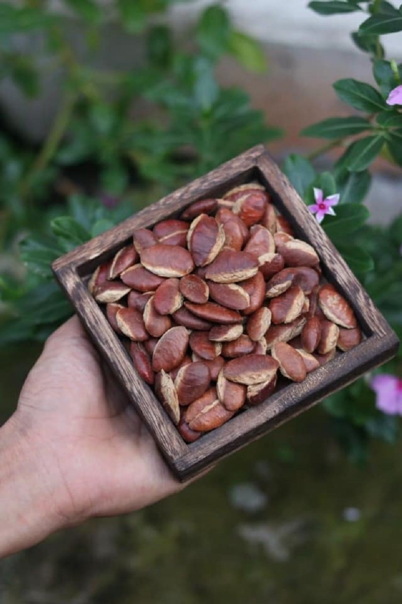
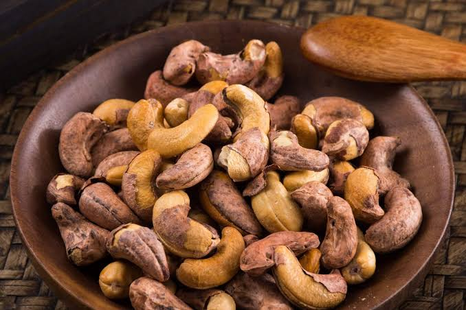

Đặc sản nổi bật
Rượu cần Tây Nguyên
Men say đại ngàn ủ trong ché theo nét truyền thống, hương thơm dịu và đậm bản sắc lễ hội Tây Nguyên.
Khám phá ngayKhám phá những món ngon và nông sản đặc trưng Tây Nguyên, được chọn lọc từ nguyên liệu địa phương và câu chuyện văn hóa bản địa.
Những hương vị Tây Nguyên được khách hàng lựa chọn nhiều.

Men say đại ngàn ủ trong ché theo nét truyền thống, hương thơm dịu và đậm bản sắc lễ hội Tây Nguyên.
Khám phá ngay

Hương vị núi rừng mộc mạc, đặc sắc và khó quên.

Nổi bậtGà thả vườn nướng thơm lừng, da vàng giòn, thịt ngọt chắc và đậm vị núi rừng.

Lẩu rau rừng cá lăng là đặc sản Tây Nguyên, hấp dẫn bởi thịt cá lăng ngọt béo, các loại rau rừng có vị đắng nhẹ, chua thanh đặc trưng, cùng nước lẩu đậm đà thơm mùi sả, nghệ và măng chua.

Truyền thốngGạo nếp nướng trong ống tre, thơm dịu mùi tre non và giữ trọn vị ngọt tự nhiên của hạt gạo.

Sự hòa quyện của nhiều loại lá rừng gồm hơn 40 loại lá khác nhau, ăn kèm với thịt ba chỉ, tôm đất, bì heo và nước chấm sánh đậm làm từ gạo nếp men sả cùng tôm thịt băm nhuyễn tạo nên hương vị độc đáo.
Nông sản và món ngon chọn lọc, tiện dùng và phù hợp làm quà tặng.
Rượu cần Tây Nguyên là thức uống truyền thống gắn liền với đời sống văn hóa, lễ hội của các dân tộc thiểu số vùng đại ngàn. Rượu được ủ men lá rừng tự nhiên trong ghè gốm với nếp hoặc mỳ (sắn), mang hương vị nồng nàn, chua ngọt thanh mát và thoảng mùi thơm nguyên sơ của núi rừng.
Bột cacao nguyên chất được chế biến 100% từ hạt cacao xay mịn, không pha trộn đường, sữa hay chất bảo quản. Sản phẩm giữ trọn hương vị đắng nhẹ, hậu vị béo thơm tự nhiên và giàu chất chống oxy hóa, hỗ trợ tim mạch cùng tinh thần minh mẫn.

Hạt rừng đặc trưng của đại ngàn, khi rang dậy mùi thơm, vị bùi béo tự nhiên và giòn vui miệng.

Hạt điều rang muối Tây Nguyên là đặc sản nổi tiếng của vùng đất đỏ bazan, nổi bật với hạt to tròn, mẩy, giòn rụm và vị béo bùi đặc trưng hòa quyện cùng chút mặn nhẹ của muối biển.
Hạt mắc ca Tây Nguyên là đặc sản cao cấp được ví như "hoàng hậu của các loại hạt", nổi bật với phần nhân tròn đầy, màu trắng sữa, giòn tan cùng vị béo bùi, thơm ngậy tự nhiên.